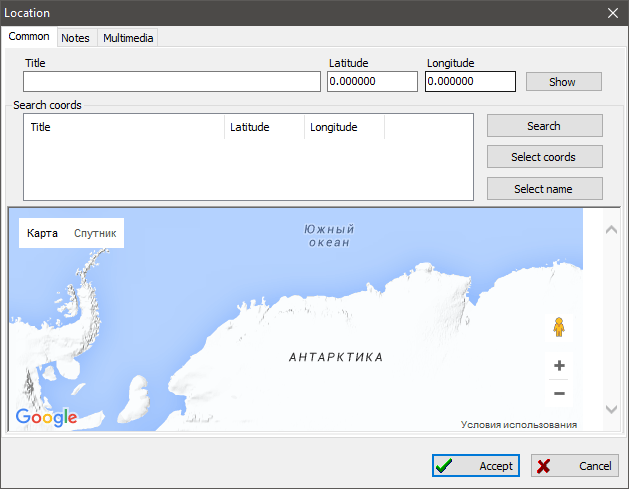

Geographical location record
Geographical location records are elements of the single location
database directory, where each location has its coordinates. When you
define a location for event/fact in
person and family record, you can do this without
referring to the location directory. But if you want to be able to see
the location on geographical maps in the
future, you have to have to add a location record to the location
database directory -- find a settlement on Google Maps and bind
location's coordinates.
You can add text note or multimedia object (for example, photo) to
geographical location.
To assign coordinates to a location do the following:
- Enter location exact name or one of possible name to the
"Name" field (it is advisable to specify modern name, because
Google Maps knows nothing about historical names of settlements);
- Click "Search" button. GEDKeeper will connect with Google
Maps and search the location in Google's databases;
- When you see a location you were required in the "Search
coordinates" list, you can click "Use coordinates; button to
assign latitude and longitude of found location to the target one. Or
you can click "Use name" to assign Google Map's name of
location or to define the name by yourself.
- When the "Search coordinates" list; does not have
matching location, you have to change location name and search again.
Repeat this until you will not find a required location;
- If you still cannot find a matching result, you should assign
latitude and longitude of necessary location by yourself. Or find the
nearest location to the required one, using steps described above, and
use that location.
"Show" button opens Google Maps at the specified
location.

There is a uniting table on the "Locations" tab of the
main working window, which includes all locations available in
database. Location summary to the right of the table shows all events,
connected to persons and families, that refer the selected
location.
See also: Event/fact, Note, Multimedia, Map.